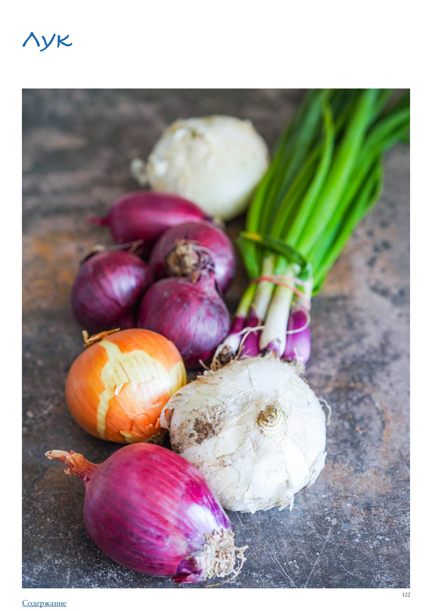

<!DOCTYPE html>
<html lang="en">
<head>
<meta charset="UTF-8">
<meta name="viewport" content="width=device-width, initial-scale=1.0">
<title>Лук</title>
<style>
  * { box-sizing: border-box; margin: 0; padding: 0; }
  body { font-family: -apple-system, BlinkMacSystemFont, 'Segoe UI', Roboto, sans-serif;
         background: #faf7f4; color: #2d2926; max-width: 680px; margin: 0 auto; padding-bottom: 40px; }

  .photo-wrap img { width: 100%; max-height: 380px; object-fit: cover; object-position: center center; display: block; }

  .header { padding: 24px 24px 16px; }
  h1 { font-size: 26px; font-weight: 700; line-height: 1.2; margin-bottom: 10px; color: #1a1714; }
  .meta { font-size: 13px; color: #9a8a80; margin-bottom: 6px; }
  .rating { display: inline-block; background: #fff3e6; color: #c05f2a;
             font-size: 13px; font-weight: 600; padding: 3px 10px; border-radius: 20px; margin-bottom: 8px; }
  .source { font-size: 12px; color: #b0a09a; margin-top: 4px; }

  .info-bar { font-size: 13px; color: #5a4a3a; margin: 6px 0 4px; }

  .section { padding: 0 24px; margin-bottom: 24px; }
  .section-title { font-size: 15px; font-weight: 700; color: #7a4f2a;
                    text-transform: uppercase; letter-spacing: 0.6px;
                    margin-bottom: 12px; display: flex; align-items: center; gap: 8px; }
  .section-icon { font-size: 17px; }

  .subsection-title { font-size: 15px; font-weight: 700; color: #3a2a1a;
                       margin: 24px 0 10px; padding-bottom: 5px;
                       border-bottom: 2px solid #e8d5b8; }
  .ingr-subheader { font-size: 13px; font-weight: 700; text-transform: uppercase;
                     letter-spacing: 0.5px; color: #8a6a3a; margin: 14px 0 4px; }
  .ingr-list { list-style: none; display: flex; flex-direction: column; gap: 8px; }
  .ingr-list li { font-size: 15px; line-height: 1.5; padding: 8px 12px;
                   background: white; border-radius: 8px;
                   border-left: 3px solid #f0c080; }
  .qty { font-weight: 600; color: #c05f2a; }

  .steps { list-style: none; counter-reset: steps; display: flex; flex-direction: column; gap: 12px; }
  .steps li { font-size: 15px; line-height: 1.6; padding: 12px 14px 12px 48px;
               background: white; border-radius: 10px; position: relative; }
  .steps li::before { counter-increment: steps; content: counter(steps);
                       position: absolute; left: 12px; top: 12px;
                       width: 26px; height: 26px; background: #f0c080;
                       border-radius: 50%; display: flex; align-items: center;
                       justify-content: center; font-weight: 700; font-size: 13px; color: #7a4f2a; }

  .notes-list { list-style: disc; padding-left: 20px; margin: 0; }
  .notes-list li { font-size: 15px; line-height: 1.6; color: #2d2926; }

  .my-notes-section { margin-top: 8px; }
  .my-notes-box { background: #fffef5; border: 1.5px dashed #c8b870; border-radius: 12px;
                  padding: 14px 18px; font-size: 14px; line-height: 1.7; color: #5a4a30; }
  .my-notes-box p { margin-bottom: 6px; }
  .my-notes-box p:last-child { margin-bottom: 0; }
  .empty-note { color: #c0b090; font-style: italic; }

  .recipe-table { width: 100%; border-collapse: collapse; margin: 4px 0 12px; font-size: 14px; }
  .recipe-table th { background: #f5ede4; color: #7a4a28; padding: 8px 12px;
                      text-align: left; border: 1px solid #e0cfc0; font-weight: 700; }
  .recipe-table td { padding: 8px 12px; border: 1px solid #e8ddd5; vertical-align: top;
                      line-height: 1.5; }
  .recipe-table tr:nth-child(even) td { background: #fdf8f5; }

  p.para { font-size: 15px; line-height: 1.65; color: #2d2926; margin-bottom: 12px; }
  p.para:last-child { margin-bottom: 0; }

  .inline-photo { margin: 16px 0; border-radius: 10px; overflow: hidden; }
  .inline-photo img { width: 100%; max-height: 320px; object-fit: cover; object-position: center center; display: block; }
  .inline-photo.portrait { display: flex; flex-direction: column; align-items: center; background: transparent; }
  .inline-photo.portrait img { width: auto; max-width: 55%; max-height: none; object-fit: contain; border-radius: 10px; }
  .inline-photo.portrait figcaption { width: 55%; text-align: center; }
  .inline-photo figcaption { font-size: 12px; color: #9a8a80; padding: 6px 10px;
                               background: #f5f0eb; font-style: italic; }
  .inline-video { margin: 16px 0; border-radius: 10px; overflow: hidden; background: #000; }
  .inline-video video { width: 100%; max-height: 400px; display: block; }
  .inline-video figcaption { font-size: 12px; color: #9a8a80; padding: 6px 10px;
                               background: #f5f0eb; font-style: italic; }

  .related-section { font-size: 13px; margin-top: 8px; color: #9a8a80; }
  .related-label { font-weight: 600; color: #7a4f2a; }
  .related-link { color: #c05f2a; text-decoration: none; font-weight: 500; }
  .related-link:hover { text-decoration: underline; }

  .cooked-bar { font-size: 13px; margin-top: 10px; display: flex; flex-wrap: wrap; align-items: center; gap: 6px; }
  .cooked-label { font-weight: 600; color: #7a4f2a; }
  .cooked-chip { background: #f0ede6; color: #5a4a3a; padding: 3px 10px;
                  border-radius: 20px; font-size: 13px; border: 1px solid #d8cfc4; }

  .my-photo-wrap { margin: 24px 24px 0; border-radius: 12px; overflow: hidden;
                    border: 2px solid #e8d9c8; }
  .my-photo-label { background: #f5ede4; color: #7a4f2a; font-size: 12px; font-weight: 600;
                     padding: 6px 14px; letter-spacing: 0.4px; }
  .my-photo-wrap img { width: 100%; max-height: 420px; object-fit: cover;
                        object-position: center; display: block; }

  .back-btn { display: inline-flex; align-items: center; gap: 6px;
               margin: 28px 24px 20px;
               background: #c05f2a; color: white;
               font-size: 14px; font-weight: 600;
               padding: 8px 16px; border-radius: 20px;
               text-decoration: none; }
  .back-btn:hover { background: #a04e22; text-decoration: none; }

  @media (max-width: 480px) {
    h1 { font-size: 22px; }
    .steps li { padding-left: 42px; }
  }
</style>
</head>
<body>
  <a class="back-btn" href="../cookbook.html">← Catalog</a>
  <div class="photo-wrap"></div>
  <div class="header">
    
    <h1>Лук</h1>
    <div class="meta">ПРАктика. Овощи</div>
    
    
    
    <div class="source">Source: ПРАктика. Овощи</div>
  </div>
  
  
        <div class="section">
          
          <p class="para">Лук</p><p class="para">Лук, пожалуй, самый «трудолюбивый» участник кулинарного процесса, хотя чаще всего остается за кулисами. К нему относятся как к «игроку на скамейке запасных», хотя он заслуживает отдельного внимания и признания, так как без его участия не обходится практически ни одно несладкое блюдо. Его едят сырым, жареным, печеным, карамелизованным, в виде луковых колец, готовят на гриле, добавляют в маринады, фаршируют и даже делают луковый мармелад. А чего стоит знаменитый французский луковый суп! Знаменитый шеф-повар Йотам Оттоленги выразил свое восхищение луком, написав: «Каждый раз, нарезая лук и опуская его в растительное масло, мы превращаем его из продукта, заставляющего нас плакать, в нечто, вызывающее на наших лицах улыбку радости». Разве не волшебство — превращение обычной луковицы с едким и резким вкусом в сладкий и нежный продукт, тающий во рту? Итак, убедившись в незаменимости лука на кухне, стоит поподробнее разобраться в многообразии его сортов. Репчатый лук — самый распространенный, с острым вкусом, достаточно жесткой шелухой, что позволяет ему долго храниться, этакий «универсальный солдат» на кухне. Чаще всего встречаются разновидности с кожицей от желтого до темно-коричневого цвета и белой мякотью. При правильной термической обработке приобретает глубокий сладкий вкус. Красный лук — более нежная и мягкая по вкусу разновидность репчатого лука. Луковицы бывают разной формы: от вытянутого эллипса до приплюснутого (так называемый «ялтинский» или «крымский» лук), но их всех объединяет гладкая кожица насыщенного лилового цвета и белая мякоть с сегментами, окрашенными в фиолетовый цвет по краям. Красный лук больше всего подходит для употребления в свежем виде — в салатах и свежих соусах (например, сальсе). Если ломтики красного лука слегка сбрызнуть уксусом или лимонным соком для смягчения вкуса, то они приобретут равномерный розовый цвет, что очень украсит любой салат. При карамелизации красный лук становится похожим на мармелад, поэтому его часто используют для приготовления лукового джема, балансируя сладость легкой кислинкой красного винного уксуса. Белый (салатный) лук — разновидность лука с самым мягким вкусом. Исходя из названия, понятно, что лучшее его применение — салаты, где он не перебивает вкус других ингредиентов остротой. Лук-шалот — звезда французской кулинарии! Луковицы обычно вытянутой формы, с тонкими слоями, с мягким вкусом и легкой чесночной ноткой. Подходит для использования в свежем виде и термической обработки. В процессе приготовления нежный шалот почти полностью растворяется. Жемчужный лук — миниатюрные луковички, которые используют в готовке целиком. Когда￾то этим термином назывался отдельный вид — виноградный лук, но сейчас подразумеваются и маленькие головки репчатого лука. Жемчужный лук чаще всего маринуют и используют как пикантный гарнир к жирным блюдам, например фондю. Но также он хорош для добавления в тушеные мясные рагу типа говядины по-бургундски.</p><ul class="notes-list"><li>О зеленом луке и луке-порее рассказывается в другой статье. Как выбирать Выбирайте плотные луковицы среднего размера, с гладкой шелухой равномерной окраски, без пятен, вмятин и зеленых ростков. Луковицы должны быть совершенно сухие.</li></ul><ol class="steps"><li>Как хранить Лук нужно хранить в сухом, прохладном, хорошо проветриваемом месте. Не стоит хранить лук в холодильнике, где из-за повышенной влажности он может начать прорастать или покрываться плесенью, к тому же его запах может передаться другим продуктам. Идеальный вариант — корзина из натурального материала. Наши бабушки хранили лук в капроновых чулках или связанными в большие связки-батманы, в подвешенном состоянии, чтобы лук хорошо проветривался — в этом есть смысл. Почему лук заставляет нас плакать? Простите некоторое занудство, но причиной наших слез является летучий компонент со сложным химическим названием тиопропанал сульфоксид, который высвобождается при разрушении клеточных мембран (при разрезании и измельчении лука) и последующем окислении — это защитный механизм лука против микробов и животных, вызывающий раздражение слизистых, особенно глаз. Каких только советов и народных способов избежать слез не встретишь: петь в процессе нарезки лука, зажать в зубах зубочистку, часто споласкивать нож водой, включить вытяжку, положить лук в морозилку на 30 минут и многое другое. Группа кулинаров и ученых-энтузиастов провела более 20 различных экспериментов и пришла к выводу, что действительно работают следующие способы: зажечь газовую горелку или свечу поблизости (огонь будет сжигать кислород, что замедлит процесс окисления) и физически защитить слизистую глаз, надев очки, контактные линзы или защитную маску. Свести к минимуму «слезоточивый» эффект лука может очень острый нож, потому что тупой скорее давит, чем режет, разрушая при этом больше клеток. Также известно, что, нарезая лук вдоль («перьями»), мы разрушаем меньшее количество клеток. Как нарезать Кубиками Отрезать верхнюю часть луковицы, сохранив нижнюю (откуда растут корни), разрезать луковицу вдоль пополам, очистить от шелухи. Уложить срезом вниз на разделочную доску, плотно прижать и сделать несколько параллельных разрезов вдоль, придерживая половинку луковицы за оставленный кончик и не прорезая ее до конца. Затем сделать несколько разрезов, не прорезая до конца, параллельно доске, после чего нарезать лук поперек. У вас получатся кубики, размер которых будет зависеть от расстояния между разрезами. Полукольцами Отрезать верхний кончик луковицы, сохранив нижнюю часть (она поможет удержать все слои лука вместе), разрезать луковицу вдоль пополам, очистить от шелухи. Уложить срезом вниз, плотно прижать к разделочной доске, придерживая за оставленный кончик, нарезать лук поперек полукружьями нужной толщины. Перьями Отрезать оба кончика луковицы, разрезать ее вдоль пополам, очистить от шелухи. Положить половинку луковицы на разделочную доску срезом вниз, плотно прижать, нарезать тонкими или более широкими перьями вдоль. Как готовить В рецептах вы можете встретить разные варианты названия приготовления лука на масле в сковородке: жарка, пассерование, карамелизация. Хотя условия готовки одинаковые, результат отличается, и это важно для конечного вкуса блюда, поэтому давайте разберемся.</li><li>Жареный лук Разогреть оливковое или топленое масло в сковородке, выложить нарезанный лук. В самом начале процесса обжаривания лук выделяет много влаги, необходимо дождаться ее испарения, потому что иначе лук получится тушеный, а не жареный. Затем нужно очень внимательно следить за тем, чтобы лук не подгорел, часто помешивая его, потому что он содержит довольно большое количество сахара, который, карамелизуясь, придает жареному луку его неповторимый аромат. Готовить до светло-золотистого или более выраженного коричневатого цвета, в зависимости от того, что написано в рецепте. Жареный лук становится хрустящим и приобретает насыщенный вкус. Пассерованный лук В процессе обжаривания, после выпаривания жидкости, лук сначала становится мягким и полупрозрачным. В рецептах этот процесс часто называют «прассерованием». Имеется в виду приготовление лука без изменения цвета в течение максимум 5–7 минут. Пассерованный лук светлый, мягкий, с нежным вкусом. Карамелизованный лук Если готовить лук на очень слабом огне долго, до 30 минут, время от времени помешивая, он постепенно максимально высвободит сахара и в итоге станет темно-янтарным, очень сладким и мягким. Это и есть карамелизация. Маринованный лук Чтобы смягчить резкий вкус лука, а также придать ему дополнительную хрусткость и пикантную кислинку, его часто маринуют. Потом его можно использовать в начинке для такос, бургеров, сэндвичей, а также в салатах. на банку объемом 500 мл 300–400 г красного или обычного репчатого лука 100 мл воды 100 мл яблочного уксуса 1 ч. л. соли 1 ст. л. сахара или меда щепотка хлопьев перца чили (по желанию)</li><li>Лук нарезать тонкими полукольцами, уложить в банку.</li><li>В небольшой кастрюле довести до кипения все остальные ингредиенты, залить горячим маринадом подготовленный лук.</li><li>Тонким ножом или вилкой надавить на лук и постараться выпустить из жидкости весь воздух. Остудить до комнатной температуры и убрать в холодильник.</li><li>В идеале нужно использовать маринованный лук в течение 3 дней, но можно хранить его в холодильнике до 2 недель.</li><li>Сочетание лука с другими продуктами Лук прекрасно «дружит» с беконом, бараниной, анчоусами и другой рыбой, имбирем, гвоздикой, грибами и картофелем, морковью, свининой и печенью, помидорами, чесноком и яйцами. Необычные сочетания</li></ol><ul class="notes-list"><li>Лук и апельсин (очень эффектно выглядит салат из красного лука с красными апельсинами)</li><li>Лук и мята (мята приглушает запах лука)</li><li>Лук и свекла (сырой или слегка маринованный лук компенсирует сладость приготовленной свеклы, делая блюдо более сбалансированным по вкусу)</li></ul><ul class="ingr-list"><li>Что еще можно приготовить с луком</li></ul><ul class="notes-list"><li>Луковый мармелад</li><li>Французский луковый суп</li><li>Луковые кольца в кляре во фритюре</li><li>Луковые оладьи</li><li>Лук, жаренный на гриле</li><li>Фаршированный лук</li></ul>
        </div>
</body>
</html>